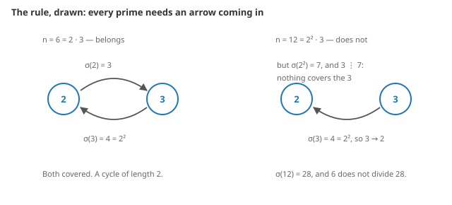
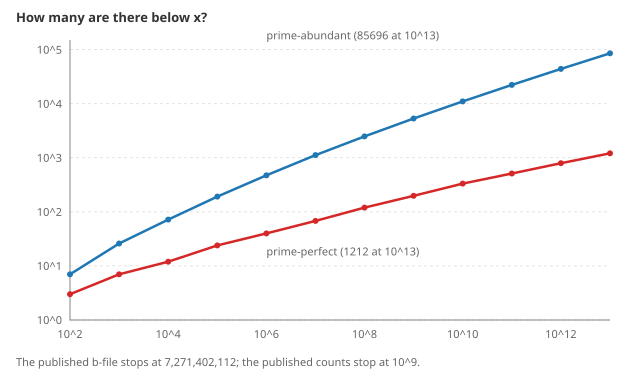
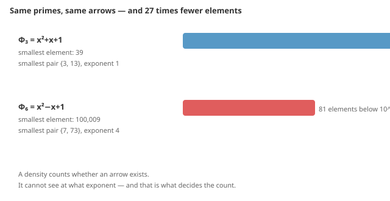

This page explains, from zero, what was found and how you can check it yourself. No background is assumed beyond what a prime number is.
Take a number, say 12. Add up all the numbers that divide it, itself included: 1 + 2 + 3 + 4 + 6 + 12 = 28. Mathematicians write that sum σ(12) = 28.
Now compare the primes involved. The primes of 12 = 2² · 3 are 2 and 3. The primes of 28 = 2² · 7 are 2 and 7. The prime 3 is in 12 and not in 28.
Sometimes that does not happen. Take 6: σ(6) = 1 + 2 + 3 + 6 = 12, whose primes are 2 and 3 — exactly the primes of 6. Every prime of the number is also a prime of the sum.
Those numbers have a name: they are called prime-abundant, and the question is simply which ones are they, and how many are there below a given size?
The whole finding comes from reading the condition backwards.
Suppose n is prime-abundant and p is one of its primes. Then p divides σ(n). But σ breaks into a product over the prime powers of n, and a prime divides a product only if it divides one of the factors. So:
Every prime of n shows up when you factor σ(qa) for some other prime power qa of n. No prime is free. They are all already there, waiting inside a factorisation.
Draw it: put the primes of n as dots, and draw an arrow from q to p whenever p divides σ(qa). The condition becomes visual: every dot must have an arrow coming in.

And a diagram where every dot has an arrow coming in must contain a loop: start anywhere, walk backwards along the arrows, and since there are finitely many dots you must eventually revisit one. So every such n is built from loops, plus whatever hangs off them.
That is the recipe. Instead of trying every integer, you build the loops — and every prime you need comes out of a factorisation you were going to do anyway.
Start from 24 = 2³ · 3. It is prime-abundant: σ(24) = 60 and rad(24) = 6, and 6 divides 60.
Now factor σ(2³) = 1+2+4+8 = 15 = 3 · 5. The prime 5 appears there, and 5 does not divide 24. So attach it: in 24 · 5 = 120 the new dot 5 has an arrow coming in (from 2), and the old dots keep theirs, because their exponents did not change.
Check it: rad(120) = 30 and σ(120) = 360 = 12 · 30. It works. And the same argument works for 24 · 25 = 600 and 24 · 125 = 3000, for ever — which proves there are infinitely many, in one line.
Nothing here is quoted from memory. Three sources, all checkable:
data/ are produced by
the program in src/, not typed in.That last line is the anchor: our program reproduces both numbers exactly. A method that agrees with a published count is a method you can start trusting.
The list now reaches 1013 instead of 107: 85,695 terms, against the 10,000 published.

The second finding is a negative one, and it is the more interesting. The same construction works for other functions in place of σ — and nothing simple predicts how many elements each one has. Two functions can have exactly the same primes and the same arrows and differ by a factor of 27.

Six candidate explanations were tested across 30 functions and all six failed, each against a rule written down before the data was looked at.
Every check compares sets, element by element — never sizes. An enumerator that loses one element and gains another counts the same and is wrong. (During this work, one cross-check did report the three correct totals with all three lists shifted by two. Only comparing the sets caught it.)
| checked against | up to | result |
|---|---|---|
| a plain sieve over every integer | 107 | identical |
| an independent segmented sieve | 1010 | identical |
| the OEIS table by Donovan Johnson | 7,271,402,112 | identical |
| the counts published by Pollack & Pomerance | 109 | exact |
Beyond 1010 every single term is re-checked on its own, by factoring it from scratch. Zero failures in 207,284 terms. And you can run all of it:
python verify.pyThree things, honestly small:
Jorge Ellena Godoy — responsible for the correctness of everything published here. System design and research direction are the author's; the mathematical results were produced by an automated system (Claude, Anthropic) under that direction.